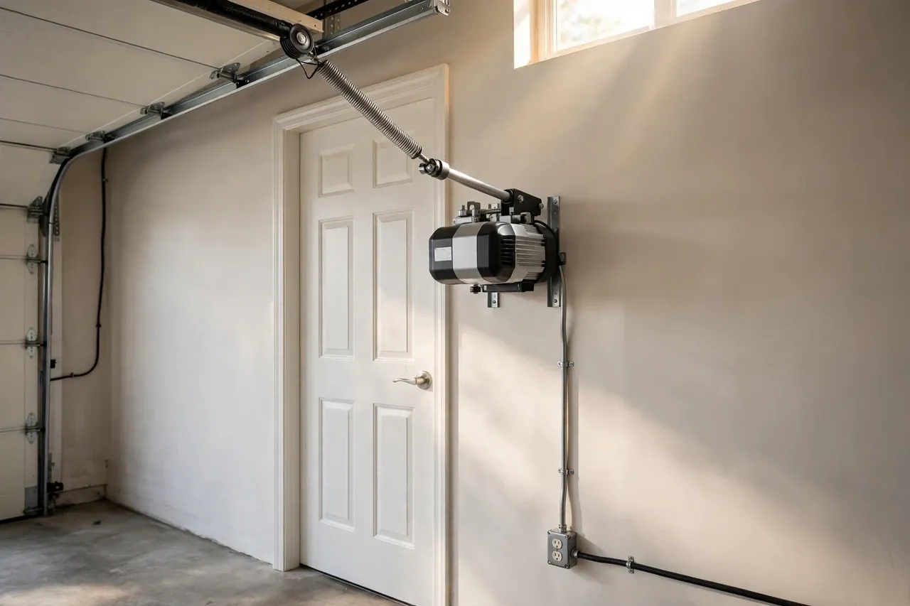

How to prepare your garage door for winter in Zion
Cold winters test garage doors. Here is how to prepare yours before the cold arrives: lubrication, sealing, safety tests, and the habits that prevent a frozen door.

Zion has cold winters: the January mean is around 20 degrees Fahrenheit and about 38 inches of snow falls a year (Illinois State Water Survey 1971-2000 normals for the nearest lakeshore station, station 119029). The median dates for the first fall freeze and the last spring freeze at that station are October 15 and April 29, which frames a long cold season for garage doors.
Winter preparation is mostly ordinary maintenance done on time: lubrication while the weather is mild, seals checked before they are needed, safety features tested before they are relied on, and habits that keep snow and ice out of the door's path. The failure language in this post is general guidance about what cold weather can do, not a prediction about any one door.
Why Zion winters are hard on garage doors
Cold weather affects a garage door in several general ways. Springs can stiffen in the cold, and a worn spring may fail on a cold morning when the steel is least forgiving. Seals can turn brittle and crack, or freeze to the ground overnight. Lubricants thicken, hardware stiffens, and the opener works harder against the added resistance, which can trip force limits or stall the door partway.
Snow adds its own problems. Snow piled against the door or drifted into the track path can stop the door closing fully, which trips the safety reverse and leaves the door cycling. Ice across the threshold can freeze the bottom seal to the ground. Fog or ice on sensor lenses, and small shifts in alignment as metal contracts, can make sensor faults show up more in winter.
None of this is stated as a measured pattern for Zion. No source read quantifies cold-related failure rates, and seasonal demand patterns in the research are labeled hypotheses, not measured data. The guidance here is framed with can and may language for that reason: cold weather can expose wear that mild weather hides, and preparation is about removing the easy causes before winter finds them.
How do I prepare my garage door for winter in Zion IL?
Work through the list in early fall, before the first freeze. Each step is homeowner work except where a technician is noted.
- Lubricate the moving parts. Lubricate hinges, rollers, and springs with a lubricant made for garage door hardware, and keep the tracks clean and dry. See how to lubricate garage door rollers and hinges.
- Check the seals. Inspect the bottom seal and weatherstripping for cracks, gaps, and sections pulling loose, and clear the threshold. See how to seal a garage door for winter in Zion.
- Test the safety features. Test the auto-reverse and the photo-eye sensors regularly. If either fails, stop using the automatic opener and call a technician.
- Look over the hardware. Check springs, cables, rollers, hinges, and tracks for the wear signs in the upkeep checklist: gaps in spring coils, frayed cables, cracked rollers, loose bolts, and bent tracks. Look only; do not touch tensioned parts.
- Check the opener and remotes. Confirm the wall control, remotes, and any keypad all operate the door. Replace weak remote batteries before winter, since cold weather can make a weak battery show up sooner.
- Clear the area. Move storage away from the door path and the sensor beam, and plan where snow will be piled so it does not end up against the door.
A full pre-winter review by a technician covers the same ground more thoroughly, including balance, tension, and track alignment. See garage door maintenance in Zion, IL.
Lubricate the right parts (and skip the wrong ones)
Lubricate hinges, roller stems, springs, and accessible bearing plates with a lubricant made for garage door hardware, applied lightly and wiped free of excess. Do the job while the weather is still mild so the lubricant is in place before the cold thickens it.
Skip the tracks, which stay clean and dry, and skip the sensor lenses, which must stay clean and clear. Skip any part the opener manual says to leave dry. Heavy grease and general-purpose sprays are not substitutes for a suitable door lubricant.
If the door still sounds dry or stiff after lubrication, the cause may be wear rather than dryness. Cracked rollers, worn hinges, and tired springs do not respond to lubricant, and they need a technician's look before winter loads them further.
Weather sealing and insulation: where the cold actually gets in
Cold air gets in through gaps: under the door past a worn bottom seal, around the frame past cracked weatherstripping, and through the door itself if it is a single uninsulated layer. Sealing the gaps is usually the highest-value winter job, because a gap defeats insulation as surely as a gap defeats a coat.
Check the bottom seal along its full length, the side and top weatherstripping, and the frame for gaps. Replace cracked or compressed seals and reseat loose weatherstripping before winter. The detailed steps are in how to seal a garage door for winter in Zion.
Insulation is the longer discussion. A national guide notes that insulating the door alone helps only if the garage walls and ceilings are also insulated, so treat the door, the seals, and the garage envelope as one plan. The full comparison is in how to insulate a garage door. If insulation adds weight to an existing door, have the springs and balance checked by a technician.
Why does my garage door freeze in Zion Illinois?
A door freezes shut most often because the bottom seal has frozen to the ground or to ice across the threshold. Meltwater refreezing overnight, snow melting and refreezing at the threshold, and a worn seal sitting in water can all leave the door stuck shut in the morning. That mechanism is general guidance from winter guides, not a measured frequency for Zion, and no seasonal cycle count is stated here.
If the door is frozen shut, do not keep running the opener. Repeated cycles strain the opener, the cables, and the springs against a door that cannot move. Let the seal release, clear ice from the threshold carefully without damaging the seal, and check that the door runs freely before returning it to regular use.
Prevention is the checklist above: a sound bottom seal, a clear and dry threshold, and snow kept out of the door path. Temperatures swing across freezing most often in late fall and early spring, according to the monthly normals, so those shoulder seasons deserve the closest attention to seals and thresholds.
What maintenance does a garage door need before winter in Zion?
Before winter, a garage door needs the same full review as any annual check, done early enough to act on what it finds: lubrication, seal inspection, hardware inspection, balance in general terms, opener and sensor function, and safety testing. A national tune-up guide describes that scope as bolt tightening and lubrication, inspection of rollers, cables, springs, shafts, bearing plates, and tracks, track leveling, tension checks, opener and photo-eye checks, debris removal, and a rust and weatherstrip check (Angi, updated October 15, 2026).
Two winter-specific additions belong on the list: remote batteries, since cold weather can make a weak battery show up sooner, and the snow plan, so plowed and shoveled snow does not pile against the door or block the sensors. Both are small jobs with outsized winter value.
Older doors deserve the earlier appointment in the season. Zion's housing stock is old, with a median year built of 1971 (American Community Survey 2020–2024 5-year estimates, via the CMAP Community Data Snapshot), and older doors in areas such as garage doors in South Central Zion, IL and garage doors in Central Zion, IL may carry older springs, cables, and openers. A spring that is near the end of its life is more likely to show its wear on a cold morning, so a pre-winter look at the springs is worth the effort. Spring work itself is technician work; see garage door spring replacement in Zion, IL.
Common mistakes to avoid before winter
- Waiting until the first freeze. Lubrication, seals, and safety tests are easier and more effective while the weather is mild.
- Forcing a frozen door. Running the opener against a frozen seal strains the opener and hardware. Let the seal release first.
- Piling snow against the door. Snow against the door blocks full closing, trips the safety reverse, and melts into the threshold where it refreezes.
- Greasing the tracks. Tracks stay clean and dry in every season. Lubricant belongs on the moving parts, not in the channel.
- Skipping the safety tests. Sensors and auto-reverse matter most when the door is stiff and the path is icy. Test them before winter and after storms.
- Ignoring a weak remote battery. Replace weak batteries before winter rather than diagnosing a remote fault in the cold.
When to call a professional
Call a professional when the safety tests fail, when springs or cables show wear, when the door binds, hangs crooked, or feels heavy, when the opener strains or stalls, or when the door keeps freezing shut despite a sound seal and a clear threshold. Winter loads expose wear, and early attention is simpler than a midwinter failure.
Milwaukee Garage Doors Inc is open 24 hours, every day. Call (224) 842-7761.
Frequently Asked Questions
How do I prepare my garage door for winter in Zion IL?
Lubricate the moving parts while the weather is mild, check the bottom seal and weatherstripping, test the auto-reverse and sensors, look over springs, cables, rollers, and tracks, replace weak remote batteries, and plan where snow will be piled. Spring, cable, and balance work belongs to a technician.
Why does my garage door freeze in Zion Illinois?
Most often because the bottom seal has frozen to the ground or to ice across the threshold, after meltwater refreezes overnight. Do not keep running the opener against a frozen door. Let the seal release, clear the threshold carefully, and keep snow out of the door path.
What maintenance does a garage door need before winter in Zion?
Lubrication, seal and hardware inspection, balance in general terms, opener and sensor function, and safety testing, plus remote batteries and a snow plan. A national tune-up guide describes the same full-review scope. Older doors deserve the earlier check in the season.
Can I use my garage door in freezing temperatures in Zion IL?
Yes, with the path and sensors kept clear of snow and ice and the safety features tested. If the door is frozen shut, do not force it with the opener. If it binds, stalls, or reverses repeatedly in the cold, stop using it and call a technician.
What affects the cost of winter garage door maintenance?
The door's condition, whether parts such as seals, rollers, or cables need replacing, and whether spring or opener work is needed alongside the seasonal checks. No Zion figure is stated here; national guide ranges for repairs are collected in the repair cost guide on this blog.
Get help with Garage Doors in Zion
If your door needs a pre-winter check or is already struggling in the cold, call Milwaukee Garage Doors Inc at (224) 842-7761. We are open 24 hours, every day.
Read about garage door maintenance in Zion, IL and garage doors in Central Zion, IL, or go to contact Milwaukee Garage Doors Inc.